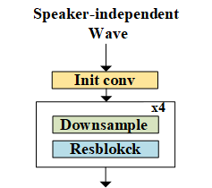
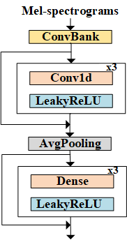
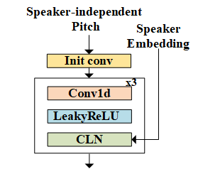

End-to-end One-shot Voice Conversion with Perturbation based Speech Disentanglement
0. Contents
1. Abstract
Voice conversion aims at converting the timbre of the source speaker to another target while maintaining the content and prosody of the source speech. However, existing approaches still have some shortcomings in the converted speech because of the unsatisfied content disentanglement or the mismatch between the acoustic model and vocoder. In this paper, we propose a fully end-to-end method to conduct high-quality voice conversion, where the information perturbation is adopted to achieve effective timbre and content disentanglement. To further model the paralinguistic information of the source speech, we propose a speaker-dependent prosody module to convert the prosodic trend of the source speaker into the target domain. Besides, we also set up the one-shot voice conversion through a continuous speaker space modeling. Experimental results indicate that the proposed end-to-end method significantly outperforms the state-of-the-art models in terms of quality, naturalness, and speaker similarity.
|  |  |  |